החממה הטכנולוגית של הנגב המערבי — מעטפת מקצועית, תשתית ומנועי צמיחה לחברות סטארט-אפ, בדרך לחברות גלובליות מצליחות.
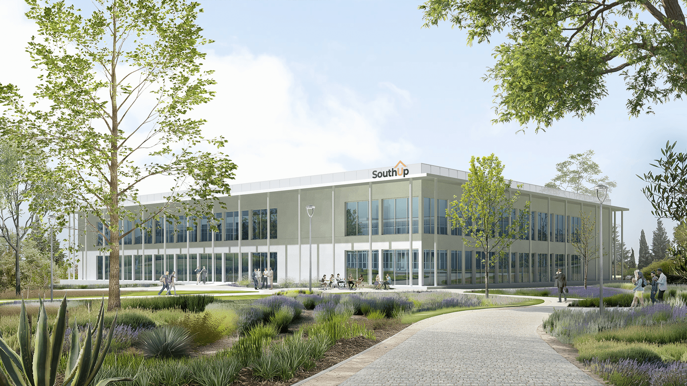
SouthUp הוקמה מתוך חזון שהפך למציאות.
SouthUp נוסדה בשנת 2017 על ידי קבוצה של יזמים ואנשי אקדמיה מהנגב המערבי, ובעידודו של ראש המועצה, אופיר ליבשטיין ז״ל, מתוך הבנה כי יש צורך בהקמת חממה אזורית שתספק מעטפת מקצועית ותשתית לצמיחת סטארט-אפים בנגב המערבי — ובמקביל תמשוך יזמים מכל רחבי הארץ להתפתח ולפעול מהאזור.
SouthUp היא חממה הפועלת כמלכ״ר ואינה לוקחת אחוזי בעלות (equity) מהחברות הפועלות בה.
מאז הקמתה, הפכה SouthUp לאחת החממות הטכנולוגיות המובילות בישראל, המהווה מנוע כלכלי מוביל בנגב המערבי — תוך שהיא הצמיחה עד היום למעלה מ־70 חברות סטארט-אפ שסיפקו מאות אפשרויות תעסוקה איכותיות לתושבי האזור.
ניסיון אמיתי בהייטק, בביטחון ובאקדמיה — לא תיאוריה.
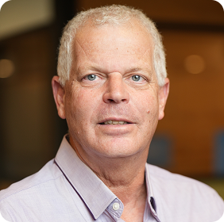
יערית מציגה כ-20 שנות ניסיון בתחומי ה-AgTech וה-FoodTech בתפקידי מחקר, פיתוח וקידום מהלכים עסקיים וגיוסי הון. מקדמת יזמות וצמיחה באופן פעיל, תוך שילוב בין מומחיות מדעית לאסטרטגיה עסקית. בעלת תואר Ph.D במדעי הצומח מהאוניברסיטה העברית ותואר במינהל עסקים (MBA) מהמכללה למינהל. מתגוררת בקיבוץ נגבה.
רון מונה למנהל (Director) של חממת D.Tech, הפועלת במסגרת SouthUp ותומכת בסטארטאפים בתחומי ה-Defense Tech, לצד תוכנית ההאצה ProTechT. בעל ניסיון רב בתעשיות הביטחוניות — כיהן בתפקידי ניהול ופיתוח עסקי ברפאל מערכות לחימה מתקדמות, כולל כסגן נשיא חטיבת M&A, והוביל מספר סטארטאפים. שימש כמנכ"ל Trion Israel. בעל תואר בהנדסת מחשבים מהטכניון ותואר MBA מאוניברסיטת רייכמן.
רשויות, מוסדות אקדמיים, קרנות וגופי חדשנות שמייצרים יחד את הסביבה לצמיחה.
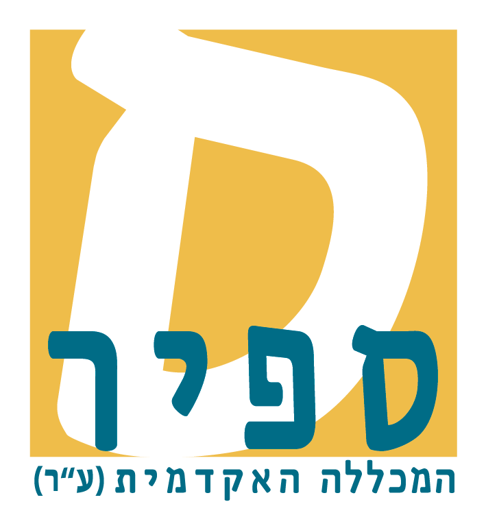
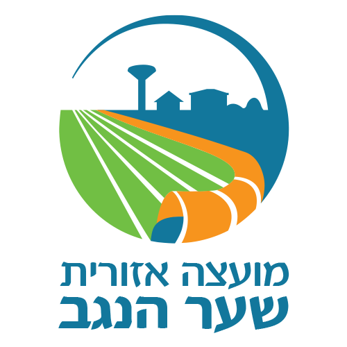
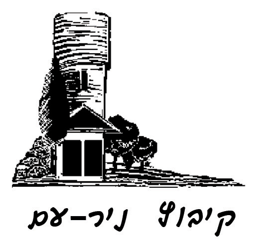
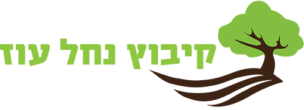
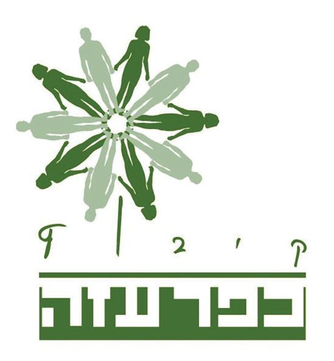
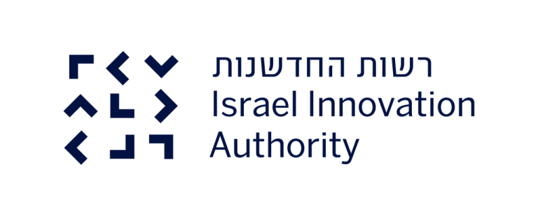
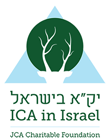
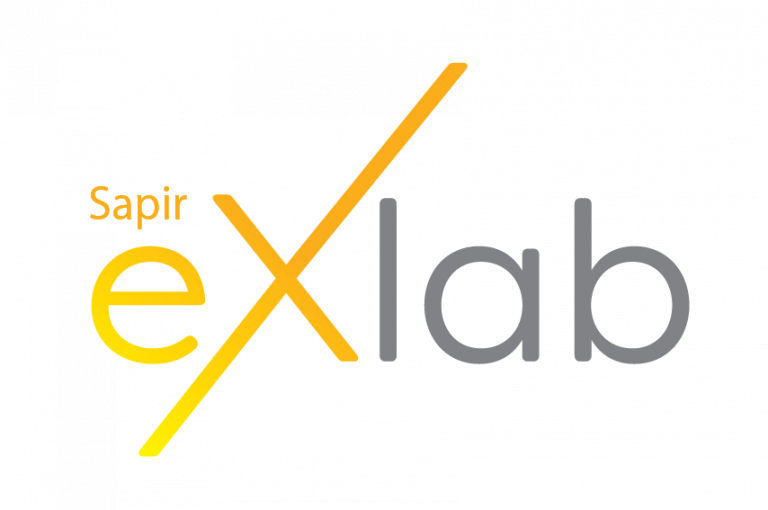
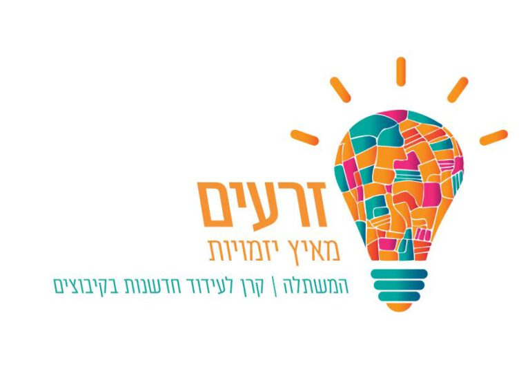
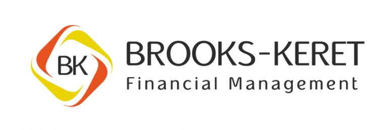
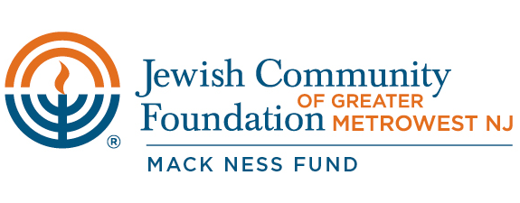
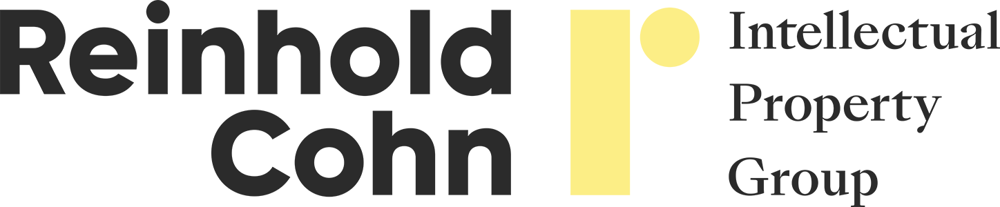
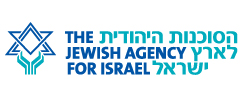
קרן ההון סיכון Ofir-SouthUp Ventures הוקמה על ידי SouthUp במטרה להשקיע בחברות סטארט-אפ הפועלות בנגב המערבי. הקרן מיועדת לחברות בשלבי Pre-seed, Seed ו-A Round, ומשלימה את תוספת מענק רשות החדשנות (72% מתקציב המו"פ – אזור פיתוח א').
על שם אופיר ליבשטיין ז"ל — ראש מועצת שער הנגב, שפעל ללא לאות לעידוד יזמות וחדשנות בנגב המערבי ונפל בהגנה על קיבוצו כפר עזה ב-7 באוקטובר.
שעה מתל אביב. ממש ליד תחנת הרכבת. השאירו פרטים — ונחזור אליכם לתאם ביקור בחממה.